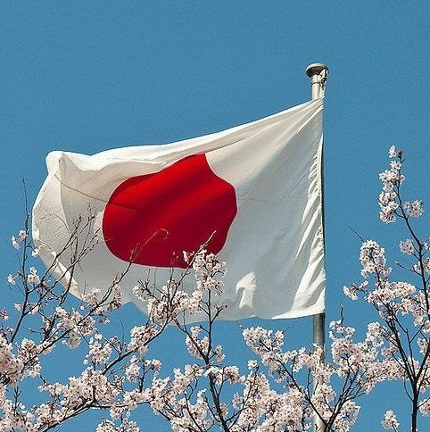
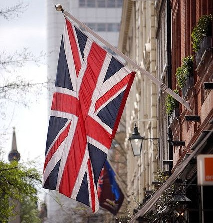
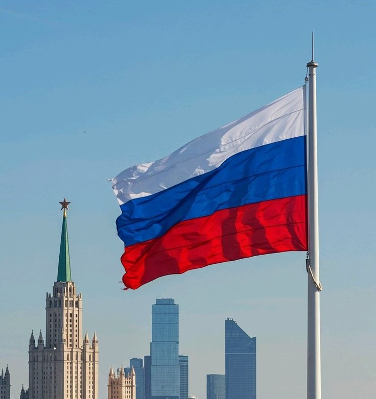

There is alot of graet places to visit in each country but even in each continent
Japan is a beautiful country in East Asia known for its unique mix of tradition and modern life. The capital city, Tokyo, is famous for its tall buildings, bright lights, and advanced technology. In contrast, cities like Kyoto and Nara show the peaceful side of Japan with temples and gardens. Tourists can enjoy seeing Mount Fuji, one of the most famous mountains in the world. Japanese food is loved everywhere, especially sushi, ramen, and tempura. The people are known for being polite, respectful, and hardworking. During spring, the cherry blossoms make the country look magical and colorful. Public transport in Japan is fast, clean, and very organized. Visitors should remember to be quiet in public places and remove their shoes indoors. Japan is a wonderful destination that offers culture, beauty, and modern comfort.
Egypt is one of the most fascinating countries in the world, known for its rich history and ancient civilization. It is located in North Africa and is home to the famous Pyramids of Giza and the Great Sphinx. Cairo, the capital city, is full of life, culture, and beautiful Islamic architecture. Tourists can visit Luxor and Aswan to explore magnificent temples and the Valley of the Kings. The Nile River, which flows through the country, gives Egypt its unique beauty and charm. Along the Red Sea, places like Sharm El Sheikh and Hurghada offer amazing beaches and diving spots. Egyptian food is delicious, with dishes like koshari, falafel, and molokhia being local favorites. Visitors will find Egyptians friendly, welcoming, and proud of their culture. The best time to visit is between October and April, when the weather is pleasant. Overall, Egypt is a magical destination that combines history, adventure, and warm hospitality.
England is a country full of history, culture, and beautiful landscapes. Its capital, London, is one of the most famous cities in the world. Tourists love to visit Big Ben, Buckingham Palace, and the Tower of London. England is also known for its old universities, such as Oxford and Cambridge. The countryside is peaceful, with green hills and charming villages. English weather is often rainy, but it gives the country its fresh, green look. Traditional English food includes fish and chips, roast dinners, and afternoon tea. The people are polite and enjoy talking about the weather. England is also home to many famous writers like William Shakespeare and Charles Dickens. Overall, it’s a country where history and modern life live side by side.
Russia is the largest country in the world, stretching across Europe and Asia. It is known for its rich history, diverse culture, and impressive architecture. The capital city, Moscow, is famous for the Kremlin and the colorful Saint Basil’s Cathedral. Saint Petersburg is another beautiful city, known for its canals, palaces, and museums. Russia has many natural wonders, such as Lake Baikal, the deepest lake in the world. The country experiences very cold winters, especially in Siberia. Russian food includes dishes like borscht, pelmeni, and blini, which are warm and hearty. The people are proud of their traditions, art, and literature. Tourists can enjoy exploring both the modern cities and the peaceful countryside. Overall, Russia is a land of history, beauty, and great cultural depth.
Spain is one of the most exciting countries to visit in Europe. It is famous for its rich culture, sunny weather, and friendly people. Tourists can explore modern cities like Madrid and Barcelona or enjoy the traditional charm of Seville and Granada. Spain offers beautiful architecture, from the Sagrada Família to the Alhambra Palace. Visitors can taste delicious food such as paella, tapas, and churros with chocolate. The country is also known for its lively festivals and flamenco music. In Spain, people love spending time outdoors and eating late at night. The best time to visit is in spring or autumn when the weather is pleasant. Spain’s mix of history, art, and fun makes it perfect for travelers. Anyone who visits will surely fall in love with its energy and beauty.